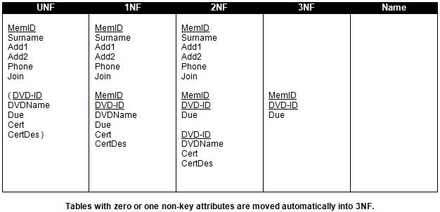

<div id="jsn-maincontent" class="span9 order1 row-fluid">
  <div id="jsn-maincontent_inner">
    <div id="jsn-centercol">
      <div id="jsn-centercol_inner">
        <div id="jsn-mainbody-content" class="jsn-hasmainbody">
          <div id="jsn-mainbody-content-inner1">
            <div id="jsn-mainbody-content-inner2">
              <div id="jsn-mainbody-content-inner3">
                <div id="jsn-mainbody-content-inner4" class="row-fluid">
                  <div id="jsn-mainbody-content-inner" class="span12 order1">
                    <div id="jsn-mainbody">
                      <div id="system-message-container"></div>

                      <div
                        class="item-page"
                        itemscope
                        itemtype="https://schema.org/Article"
                      >
                        <meta itemprop="inLanguage" content="en-GB" />

                        <div itemprop="articleBody">
                          <p>&nbsp;</p>
                          <h1 style="text-align: center">
                            Step 3 - From 2NF to 3NF
                          </h1>
                          <p>
                            <strong
                              >STEP 3 - Take the database in 2NF and put it into
                              3NF</strong
                            ><br />A database is in 3NF if it is in 2NF and each
                            table has no non-key attributes that depend upon
                            other non-key attributes. Again, this is a mouthful
                            but again it is easier to do than talk about!
                          </p>
                          <p>
                            <strong>3a)</strong> Any table that is in 2NF and
                            has zero or one non-key attributes, are
                            automatically in 3NF. They can be moved across
                            without further thought. This applies to the second
                            group of attributes in the 2NF table.
                          </p>
                          <p style="text-align: center">
                            &nbsp;
                          </p>
                          <p>
                            <span style="line-height: 1.5"
                              ><strong>3b)</strong> Now, you do not even need to
                              look at any attributes that are part of a key.
                              Going from 2NF to 3NF concerns only non-key
                              attributes. You are looking for any non-key
                              attribute that is directly related and dependent
                              upon another&nbsp;</span
                            >
                          </p>
                          <p>
                            non-key attribute. The only example where this
                            occurs is in the third table. The description of any
                            certificate is clearly dependent upon the actual
                            certificate’s ID. If you are given a certificate’s
                            ID, then you should be able to get its description
                            from it. Certificate description is dependent upon
                            the certificate ID. In this situation, you must move
                            CertDes but copy across Cert into their own table in
                            3NF. Notice the subtle difference between 'copy' and
                            'move'. Also note that Cert in the DVD table is now
                            a foreign key (and it is a primary key in the
                            CERTIFICATE table). It is used to link the table DVD
                            with the CERTIFICATE table. Cert has a star put next
                            to it in the DVD table to indicate that it is a
                            foreign key in that table.
                          </p>
                          <p>
                            <strong>3c)</strong> Now Identify which attribute is
                            the primary key in this new table you have created.
                            It is the attribute that the other attributes are
                            depending upon. In this case, it is Cert. You should
                            underline Cert to show it is the primary key.
                          </p>

                          <p>
                            <strong>3d)</strong> Move across all the other
                            tables and data, as they have no non-key
                            dependencies.
                          </p>
                          <p>
                            <strong>3e)</strong> Give each table a suitable name
                            in the Name column.
                          </p>
                          <p>
                            If you have done everything correctly, your Analysis
                            Table should now look like this:
                          </p>
                          <p style="text-align: center">
                            
                          </p>
                          <p>
                            <span style="line-height: 1.5"
                              >Your database is now in 3NF because by
                              definition, it was in second normal form and now
                              has no non-key dependencies.</span
                            >
                          </p>
                          <p>Some points to note:</p>
                          <ul style="list-style-type: disc">
                            <li style="list-style-type: none">
                              <ul style="list-style-type: disc">
                                <li>
                                  Your database design now has four tables in
                                  it, all related.
                                </li>
                                <li>
                                  The database is designed so that redundant
                                  data is minimised. Also, the chances of
                                  introducing data inconsistencies have been
                                  reduced because you have removed the need to
                                  add, delete and amend data more than once.
                                </li>
                                <li>
                                  The table with the compound primary key has a
                                  name derived from the two tables that made up
                                  its key. However, you could more usefully have
                                  called this table LOANS!
                                </li>
                              </ul>
                            </li>
                          </ul>
                          <p>
                            Take your time and understand exactly what you have
                            to do at each step - it will be the same for every
                            database design!<strong>&nbsp;</strong>
                          </p>
                          <p>&nbsp;</p>
                        </div>
                      </div>
                    </div>
                  </div>
                </div>
              </div>
            </div>
          </div>
        </div>
      </div>
    </div>
  </div>
</div>
